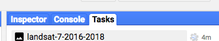
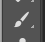

Exporting data from Google Earth Engine
You'll want two .tif files: a basemap, and another one containing the actual data - the Hansen deforestation data from 2000 to 2017.
You can get these two .tif files from Google Earth Engine. Fire it up, and create a new repository!

Once this is done, click on New > File > and select the right repository from the dropdown menu.
Your new empty file should appear in the middle window. You want Landsat 7 data for Brazil between January 2016 and January 2017, so you can copy paste this code:
// Defining a bounding box
// min x min y max x y max y
var region = ee.Geometry.Rectangle(-55.0, -8.5, -41.5, 2.0);
// We're using landsat7 data
var collection = ee.ImageCollection('LE7_L1T')
// retrieving all data for that period
.filterDate('2016-01-01', '2017-01-01')
.filterBounds(region);
// using landsat simple composite algorithm
var composite = ee.Algorithms.Landsat.simpleComposite(collection, 75, 3);
// exporting the image to the drive
Export.image.toDrive({
image: composite,
description: 'landsat-7-2016-2017',
scale: 300,
maxPixels: 270000000,
crs: 'EPSG:32723',
region: region
});
Click on Run, then on Tasks in the third window.
You'll have to click on run, next to the new file that just appeared in this window. It should take a while, but once this is done, you'll have a brand new .tif file in your Google Drive. And that's your basemap!
Now, off to the Hansen data, so we can get out of Google Earth Engine and move on to Photoshop. You can copy paste this code:
// Load a forest cover loss data and get lossyear.
var forestLoss = ee.Image ('UMD/hansen/global_forest_change_2017_v1_5')
.select ('lossyear');
// Create a geometry representing an export region.
var region = ee.Geometry.Rectangle ([-55.0, -8.5, -41.5, 2.0]);
// Export the image, specifying scale and region.
Export.image.toDrive ({
image: forestLoss,
description: 'hansen-data-filter',
scale: 300,
maxPixels: 270000000,
crs: 'EPSG:32723',
region: region
});
And proceed as you just did with the basemap.
Download the two .tif files from your Drive, and open P H O T O S H O P.
Making an okay-ish basemap in Photoshop
Sidenote:if your version of Phothoshop is in a language other than English and you're just sick of it, maybe this link can be kind of helpful.
Open your basemap .tif file in Photoshop. Under channels, you should see this:
What you are going to do is copy/paste the first three bands into a new file's Red, Green and Blue channels to get an image you can modify, so that it can look slightly more decent. Refer to this page for more information about which bands to use when dealing with rasters.
Before you create a new file, click on the Gray channel. It should get highlighted, and there should be an eye icon next to it. You'll want to make sure the layer is selected, which means that you'll need to press Command + A, or go under Select > All. There should be dots around your image, like this:
Copy (Command + C or Edit > Copy), and now that this selection is on your clipboard, you can create a new file.
Go under File > New > and you'll want to change the Color Mode to RGB Color 8 bit. Make sure you select the Clipboard option.
Click ok, and paste the Gray layer you selected in the original basemap to the Blue Channel in your new file.
You can do the same thing over again for Alpha 1, which should be pasted to the Green channel of your new document, and Alpha 2, which should be pasted to the Red channel of your new document.
The new file should sort of look like this:
Now, it's time for Photoshop things.
First, you can see that your file is super dark. You can solve this problem by using the levels tool, with all your bands selected (to select all bands at once, just click on the RGB channel). Levels are under Image > Adjustments > Levels. Or Command + L.
Adjust the cursors on each side of the curve. In class, we used these numbers that seemed to give pretty good results:
If you are satisfied, click OK. Then you can either adjust the levels for each layer if you feel like it, or click on Image > Auto Tone, then Image > Auto Contrast, then Image > Auto Color. Or do this, then slightly adjust the levels of the layers, I don't know, whatever makes you happy.
Now, you're left with a small problem: the piece of ocean that looks like trash. You'll want to take it out, and you'll need additional layers in order to do this.
Hopefully you didn't close the original .tif file, because now you need it again! If you look at each band closely, you'll see that Alpha 3 has a big contrast. So, you are going to copy paste this band in your new file, but not under a channel, under layers. Your new file's layers should look like this:

You can accentuate the contrast of this new layer by using the levels tool. To me, this looks kind of decent:
You can fill the black color on this layer with another color - like red, for example, so you can see what you're doing better.
To do this, click on Select > Color Range > Eye Dropper > Click somewhere in the ocean on your image, so you have the black color selected > increase the fuzziness to, for example, 140 or whatever, try different things so that you don't have too much land in your selection > Click Ok.
Now you should have your ocean and rivers selected. You can fill this selection with red, and for that you'll need to create a new layer (it is this little button on the bottom right corner).
Lock the layer where your selection is - that is to say the Alpha 3 band you previously copy/pasted from the .tif file. Your workspace should look like this:

You'll want to change the foreground color here to red!
Select the ocean layer (Layer 2, probably - COMMAND + A, I swear this thing gets me every time), go under Edit > Fill > select Foreground Color in the Content dropdown menu > make sure the opacity is set to 100% > click Ok.
Beautiful.
Now, you can color the land in black to make the ocean easier to clean up - because there are still things we don't want to see in it! Make sure your background color is set to black (refer to the image above when we set the foreground color to red). Create a new layer, that you'll put between the red one and the former Alpha 3 one. You are going to invert the selection, under Select > Inverse (or Command + Shift + I ). Then go under Edit > Fill > select Background Color in the Content dropdown menu > opacity 100% > Ok.
You can deselect everything (Select > Deselect or Command + D). Select the red layer, and click on the Brush tool . You can change the size of the brush, and now is your chance to make things look better.
If you want to choose a good color to fill your ocean, maybe you can go back to the background layer and use the eyedropper tool on an interesting part of the ocean. You need to unselect all the layers in order to do that. Put the blue you like as a foreground color, for example.
Select (Command + A!!!!) the layer with the ocean - the red one - and lock it. Then do as usual Edit > Fill > Foreground color if blue is your foreground color, otherwise you can select Color from the dropdown menu and copy/paste the hex code of the blue you chose in there > Opacity 100% > Ok.
You can now unclick all the layers you don't need and tada:
Yea I know, there's too much water on that land, sorry about this, but let's deal with the Hansen data
Hansen data in QGIS
OPEN QGIS
Create a new project, drag the Hansen data .tif file. It should look like this:
Strategy: you are are going to create two layers - or more! up to you. I'll create two.
- - One that will represent all the data, that is to say deforestation between 2000-2017.
- - One that will represent the loss for some years only, and for this example let's say since 2015. But definitely feel free to change this.
Let's start with the data for all the years.
Right click on the layer > Properties > Symbology > change the Render Type to Singleband pseudocolor > change the color ramp by clicking on the arrow next to it > Create new color ramp > Gradient > click Ok > change color 1 and color 2 so that they are the same (to red, maybe?) > click Ok > change the mode of classification to Equal Interval > Change the opacity of the "0" class to 0 by right clicking > Opacity > 0% > change the values of your interval so that the range covers all values starting from 1 to 17 seems like a good thing to do. This was so long and convoluted, oh my.
Let's create the second layer.
Duplicate the layer you just created: Right click > Duplicate. Do what you just did all over again! You'll want the color ramp to be a different color, though. And you'll also want the classes to be different. If you want data ranging from 2015 to 2017, you could do something like this, maybe:
Now, let's export the two layers.
Right Click on the layer > Export > Save as > check the Raw Data checkbox > change the CRS to WGS84 - UTM zone 23S
Ok now you can sliiiightly cheat.
Check out the size of your image basemap in Photoshop by clicking on this icon:
and put the values here in QGIS:
Don't forget to put a filename in, and click Ok.
Do the same thing over again for the other layer, and then open the two new .tif files in Photoshop.
Hansen data in Photoshop
You can add a 1 px stroke on both of your .tif files. Make sure the image is selected (Command + A ) > Edit > Stroke > select the right color > 1 px > Inside > Ok. Do this on both files.
Copy/Paste in place (Command + V) the two layers on your basemap! Also, note that I was too lazy to re-run the corrected script in Earth Engine, so the data is slightly off, but the code at the top of this page is the corrected one. So your thing should look better, basically.
You're aaaalmost there. And now you can start getting creative. For example, if you double click on the background layer, you can make it the "Layer 0", so you can move it around. You can put the white layer (Layer 1) under it, and change the opacity of Layer 0, so it can look pretty.
You can also change the colors of your Hansen data: you need to lock the layer, select it (not working? Did you Command + A?), and go to Edit > Fill > select Color in the dropdown menu so you can choose the color > Ok.
Once you're satisfied, you can export all this to Illustrator: File > Export > Export as png, maybe?
Open it in Illustrator, make an artboard that's 900px wide so your final product can work fine on Desktop! And then resize your huuuge image for it to fit the artboard. Add all you want, have a blast.
D O N E.
‚ú® üó∫Ô∏è ‚ú®